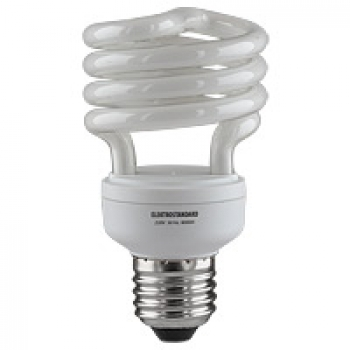

О выборе энергосберегающей электролампы
 Основные параметры выбора энергосберегающих ламп
Основные параметры выбора энергосберегающих ламп

Мощность:
Энергосберегающие лампы
выпускаются мощностью от 7 до 250 Вт. Мощность энергосберегающих ламп в 5
раз меньше мощности ламп накаливания, поэтому выбирать мощность
энергосберегающей лампы целесообразно исходя из пропорции 1 к 5.
| МОЩНОСТЬ ЛАМПЫ НАКАЛИВАНИЯ, ВТ | АНАЛОГИЧНАЯ МОЩНОСТЬ ЭНЕРГОСБЕРЕГАЮЩЕЙ ЛАМПЫ, ВТ |
|---|---|
| 35 | 7 |
| 40 | 8 |
|
45 |
9 |
| 60 | 11 |
| 65 | 13 |
| 75 | 15 |
| 90 | 18 |
| 100 | 20 |
| 125 | 25 |
| 130 | 26 |
| 150 | 30 |
| 225 | 45 |
| 275 | 55 |
| 425 | 85 |
| 525 |
105 |
Цветовая температура:
При
выборе мощных энергосберегающих ламп, необходимо обращать внимание
на световую температуру и цветовой спектр. Бывает такое, что
энергосберегающие лампочки кажутся некомфортными для глаз. Это
происходит только потому, что они неправильно подобраны к помещению,
кроме того, слишком яркая для данного метража лампа будет вредна для
глаз так же, как и слишком тусклая».
- Холодный белый свет (6000 К) - ярко-белое, голубоватое освещение. Подходит для офисных помещений, кабинетов. На кухне и в детской комнате такой свет не уместен, глаза будут быстро утомляться.
- Естественно-белый свет (4200 К) - тон, близкий по спектру к естественному освещению. Подходит для гостиной и детской комнаты.
- Тёплый белый свет (2700 К) - желтоватый, самый тёплый из спектра цвет. Наиболее близкий по спектру к лампе накаливания. Подходит для кухни и спальни. А вот в рабочей зоне будет вызывать раздражение и дискомфорт.
- Считается что световой спектр до 3500 К подходит для отдыха, свыше 3500 К для работы
Тип цоколя:
Современные
энергосберегающие лампы, предназначенные для отживших свое ламп
накаливания, используют классический цоколь «Эдисона». Он имеет
обозначение Е27. Цифрой определяют диаметр цоколя в миллиметрах.
- В небольших светильниках, настольных лампах, бра, чаще используется цоколь Е14, который отличается от классического меньшим диаметром.
- В мощных светильниках, используют цоколь Е40, который имеет больший диаметр.
- Энергосберегающие лампы, могут иметь и другие типоразмеры цоколей, например G13 и G24.
- Цоколи G4 - G9, в зависимости от типоразмеров ламп, могут иметь компактные точечные лампы.
Выбирая новую лампу, убедитесь, что она имеет цоколь, подходящий к Вашему светильнику.
Форма:
U-образные (с 2,3 ,4 и 6 дугами)
- спиралевидные, полуспиральные
- колба в виде груши, свечи или шара
- рефлекторные
Многообразие форм, типоразмеров, светового потока и световой температуры позволяет использовать современные энергосберегающие лампы в абсолютном большинстве современныхсветильников
Преимущества энергосберегающих ламп перед традиционными лампами накаливания
Основная
причина выхода из строя лампы "Ильича" - это перегорание вольфрамовой
нити накаливания. Энергосберегающая лампа работает по другому принципу,
кроме того ее строение коренным образом отличается от лампы накаливания.
Срок службы лампы накаливания составляет от 750 до 1200 часов,
современные технологии производства энергосберегающих ламп позволили
увеличить срок их эксплуатации до 15000 часов. Больший срок службы
энергосберегающих ламп позволяет менять их значительно реже, что
оправдано при использовании энергосберегающих ламп в труднодоступных
местах, например в офисах, школах, детских садиках, складских
помещениях, гаражах, в цехах заводов и других местах, где потолки
значительно выше, чем в жилых помещениях.
Энергосберегающие лампы имеют теплоотдачу, значительно ниже, чем лампы накаливания, поэтому энергосберегающие лампы можно применять в ночниках, пластиковых светильниках и люстрах с ограничением уровня температуры, не опасаясь, что светильник может расплавиться. Кроме того форма современных энергосберегающих ламп позволяет применять их, как элементы декора, в соответствующих светильниках.
Площадь поверхности энергосберегающих ламп в разы превышает площадь вольфрамовой нити лампы накаливания. Большая площадь позволяет распределять свет по освещаемой территории равномернее и мягче, что больше соответствует естественному, солнечному освещению, привычному для глаз.
Электронный фильтр, встроенный в современную энергосберегающую лампу, эффективно подавляет высокочастотные помехи, которые проникают в сеть.